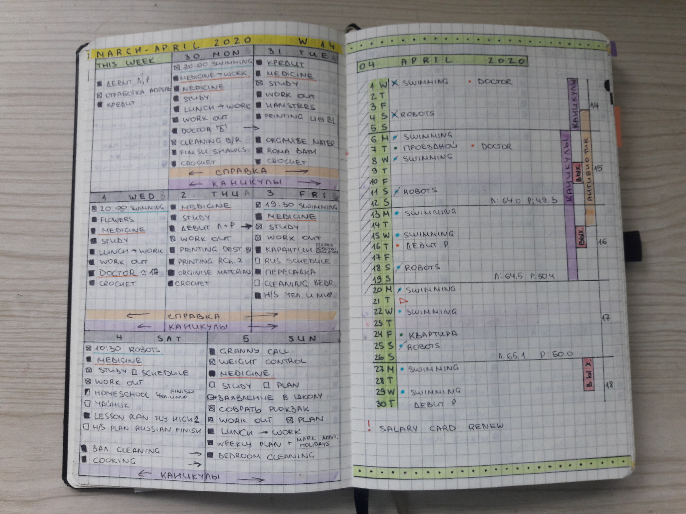
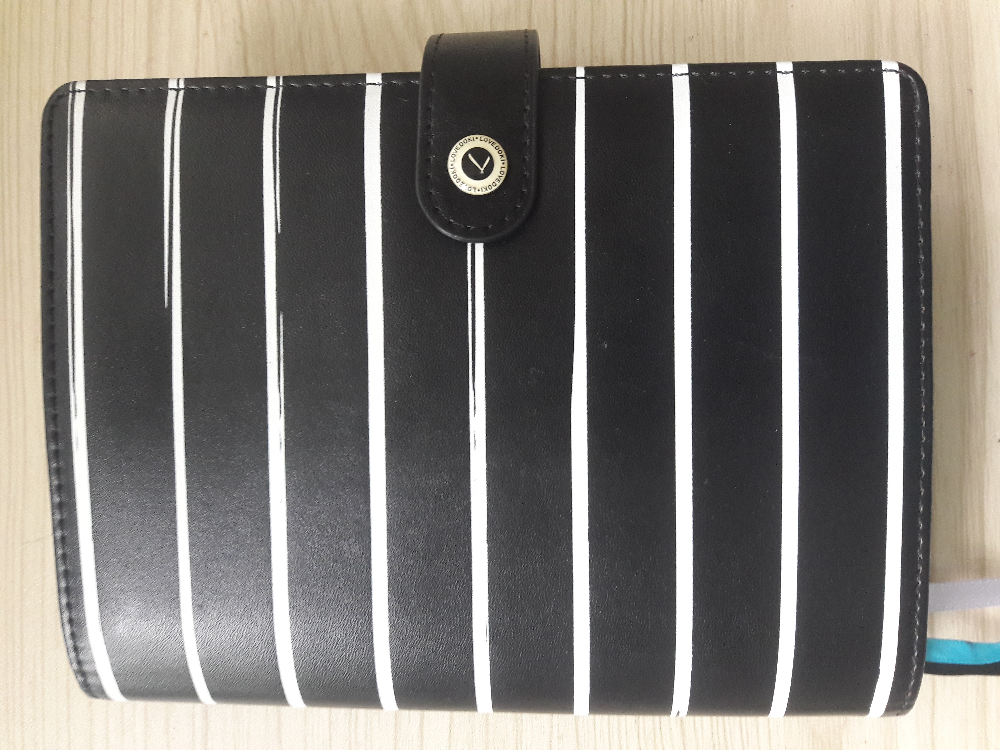

⨳ Ежедневник ⨳
Привет, друзья!
Многие из вас знают меня по YOUTUBE каналу, который я веду с переменным успехом последние 4 года. И всё это время (а даже немножко больше) я пытаюсь найти тот формат ежедневника, который мне подойдёт. Местами это даже превращается в паранойю.
Ежедневник, действительно, является важной частью моей жизни и учёбы, поэтому считаю, что этот пост не так уж и не в тему.
Последняя попытка привела меня к формату обычного блокнота в клетку, в котором я все развороты расчертила сама.
И всё в нём было хорошо. Вроде бы. Но, когда мне понадобилось найти какое-то выполненное несколько недель назад дело, оказалось, что в таком формате это не так просто. Пришлось практически перечитать все записи, прежде, чем нашлось то, что я искала.

И тут Командор задумался... Кроме того, мысль о том, чтобы
расчертить целый год, меня совершенно не радовала. А не
чертить сразу всё - это не мой вариант. Всё, что связано с
планировщиком, мне нужно сразу и на длительный период.
А ещё меня стала бесить разлиновка от руки. Я не очень красиво
пишу, и не очень умею всё красиво оформлять. Стало ясно, что
было бы гораздо лучше, если бы бланки были компьютерные.
Я уже давно поняла, что никакие кольца и всё в таком духе мне не подходит. Потому что как только в ежедневнике можно что-то быстро поменять, я обязательно поменяю. Собственно именно поэтому несколько месяцев назад я и выбрала прошитый блокнот в котором ничего невозможно поменять, кроме самого блокнота.
В разговоре с подругой, которая мою боль понимает, потому что сама такая же, я пожаловалась, что снова всё не так, и она предложила рассмотреть варианты готовых блокнотов. Благо, выбор сейчас огромный, и промышленных, и ручной работы. И начался поиск. Но всё, что мне попадалось имело два существенных недостатка.
- Недостаток пустых страниц для записей.
- Куча всяких разворотов, которые я не веду и вести не хочу.
У меня есть некоторое количество списков, которые я веду уже не первый год и мне удобно, чтобы они были всегда под рукой.
Всякие списки книг, трекеры и прочее. Для некоторых вещей у меня есть отдельные блокноты, которые я обычно заполняю только дома и дома они и хранятся, потому что это не та информация, которая мне нужна с собой. А страницу с трекерами я обычно просто забываю открыть и заполнить.
Всё та же подруга, выслушав все мои жалобы, сказала гениальную вещь, которая мне в голову уже тоже приходила. "Сделай сама". И тут стало понятно, что это - единственный выход. Сделать блокнот полностью под себя и вести его так, как мне удобно.
Всерьёз задумавшись, я вдруг поняла, что если сшитый блок я сделать вполне в состоянии, то с обложкой у меня явно проблемы. И тут попалась мне обложка от старого ежедневника на кольцах, в котором кольца оказались косячные и я их выдрала, но обложка осталась и вполне подходила для моих целей. Правда блокнот в эту обложку желательно было бы вставить в своей обложке, которую делать я как раз и не умела.

Но тут мне на помощь пришёл ежедневник, который я покупала еще в начале года с мыслью вести, но так и не решилась переходить. Потом я использовала там несколько страниц, но, в общем-то, он валялся без дела. Если аккуратно достать (вырезать) из него сшитый блок и вставить свой сшитый блок, то может получится очень даже приличный ежедневник.
Полдня ушло на создание подходящих разворотов. Пришлось всё хорошенько продумать, чтобы было удобно, потому что такой формат уже не переделать. И важно было, сделать так, чтобы страницы шли в нужной последовательности.
С этим справилась, с распечаткой справилась, всё сложила, проверила, сшила, склеила, добавила ленточки-закладки, вклеила в обложку, и Ура! у меня есть ежедневник. Вставила всё это в обложку от блокнота на кольцах. И какое-то время была вполне довольна.
Не нравилось мне в этом всем только то, что сам блокнот голубой. А хотелось бы чёрный или, в крайнем случае белый, потому что основная обложка чёрно-белая.

И тут снова помогли мои запасы. Там и нашёлся подходящий по размеру чёрный ежедневник. Жалко, что я не вспомнила о нём сразу, тогда не пришлось бы переделывать. Ну и ладно, потратила лишние 20 минут, но зато сколько удовольствия!
В итоге появился у меня вот такой ежедневник, полностью для меня подходящий.
Скоро на канале появится видео-обзор, где я вам подробненько расскажу и покажу всё о внутренней организации моего нового помощника.
Спасибо за время и внимание ♥
До встречи в новых постах!Обнимаю, Ваша Я ♥